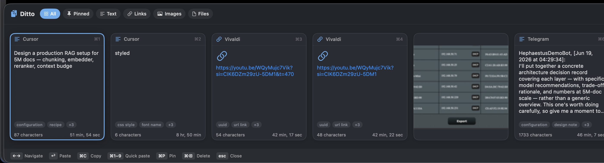
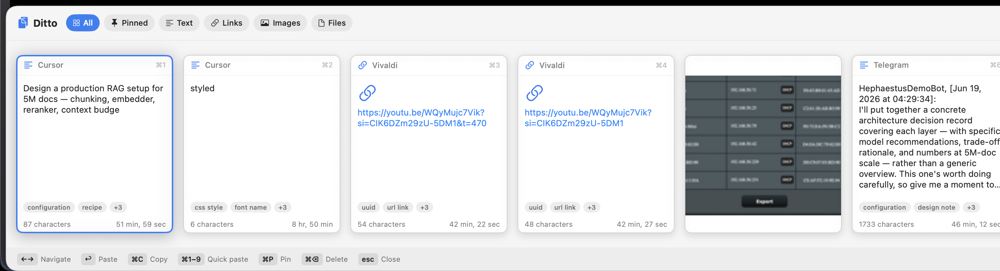
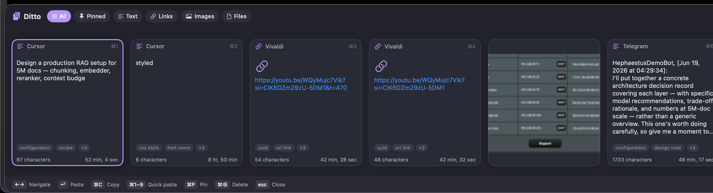
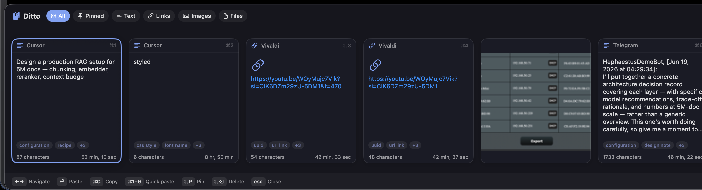

Yank is a fast, private clipboard manager for macOS. Press ⌃⌥⌘V and your history slides up from the bottom — searchable by meaning, not just exact text, entirely on your Mac.

A native Swift app — no Electron, no account, no cloud. Just a fast bar for everything you copy.
A global ⌃⌥⌘V hotkey brings the bar up over any app. Pick a clip and it pastes straight back where you were.
On-device AI (CoreML) finds clips by what they mean. Search "that database query" and get it — no exact words needed.
Everything stays on your Mac. No network calls, no telemetry, no account. Password managers are skipped automatically.
From a clean Swiss greyscale to One Dark, Dracula, Tokyo Night, Catppuccin and more — plus light themes. Follows your system appearance.
A horizontal card strip, a dense compact list, or a Spotlight-style palette with a live preview. Your call.
Yank recognises what you copy — rich text, URLs, hex colors, files and images — and keeps thumbnails for fast browsing.
Clipboard managers are a well-loved category. Yank is the one that's free, open-source, fully on-device, and searches by meaning.
| Yank | Typical free manager | Typical paid manager | |
|---|---|---|---|
| Price | Free | Free | Subscription / paid |
| Open source | ✓ MIT | sometimes | — |
| On-device semantic searchfind clips by meaning, not exact text | ✓ | — | rare / cloud |
| Encrypted at rest | ✓ | — | in the cloud |
| Stays on your Macno cloud, no account, no telemetry | ✓ | usually | cloud sync |
| Themes & layouts | 17 + 3 | minimal | polished |
| Text, links, colors, images | ✓ | ✓ | ✓ |
No cross-device sync — on purpose. Your clipboard holds passwords and tokens; it should never touch a network.
Built-in presets inspired by the editors you already love — and it adapts to macOS Light / Dark automatically.



Download, drag to Applications, grant one permission, and press ⌃⌥⌘V.